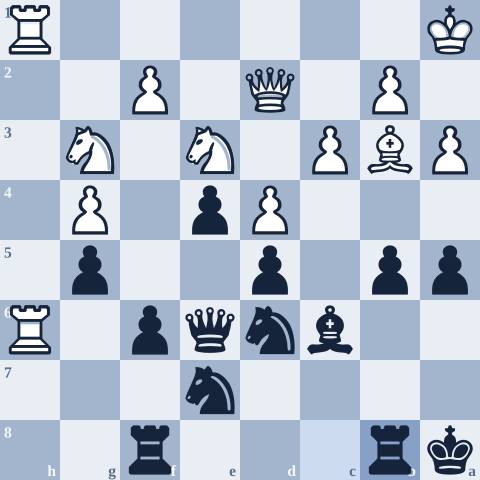
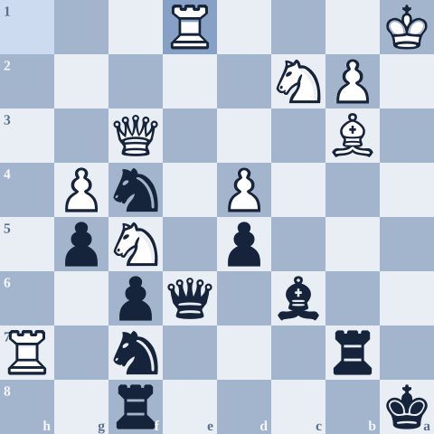
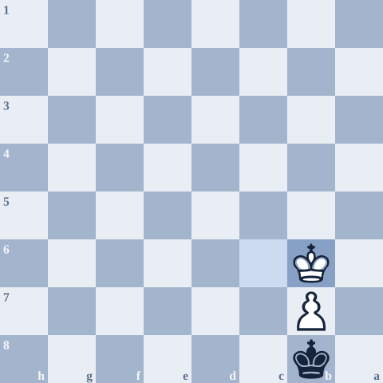

The Philly Open was likely my best event: a draw, then three straight wins (two of them near-perfect games against 2000+ players), then a final-round draw with GM Maxim Dlugy as Black. I ended up tying for 3rd despite a strong field of GMs and other titled players.
This was the second time I was playing a grandmaster, the last time being 10 years ago, when I got slowly crushed by GM Joel Benjamin at the US Open. A draw here really validated a lot of my chess, that I had the strength to rival people at the highest level. I always had this issue of wondering why I'm doing something I'm at a low level at, but this gave me a lot of strength.
Now, I will say this game isn't pretty. I built up and squandered an opening advantage as Black. He outplays me but misses some critical ideas to cement his advantage at a few points. Then a natural but slow move like Qc3 lets everything trade off, and I hunt down the draw.
I covered this game briefly in Three Games That Got Me to NM. This is the full version, with the lines I looked at after the game.
- 121...e5 My draw offer
- 225...e4?! Locking the center
- 332...b5!? Overambitious
- 438.Rh7? Instead of 38.c4!!
- 545...Rxb4?? Instead of 45...Bb5!
- 648.Qc3?! Everything trades off
Prepping his London
I saw he played the London only online and in some tournament games, so I prepped my London line better this time.
- 9.Ne5He didn't spend any time jumping into this line, so I figured he knew the theory, and I was getting worried he'd go into the g4 lines.
- 10.Nd3The more positional main line. 10.g4!? is the super sharp line here, which he probably assumed I knew. I quickly reviewed these lines, so maybe I would've remembered, but thankfully he didn't go for them. After 10.g4 Ng7 11.h4 Nxe5 12.dxe5 Bxe5 13.Nf3 Bc7!? 14.h5! gxh5 15.Bh6 Rg8 16.Rg1, Black has 16...Ke7!!, the key move that makes this line work. 16...Qf6?? runs into 17.Bg5 Qg6 18.Bd3 f5 19.Qa4+.
- 10...Ng7He later said this was a smarter move order than ...O-O first, which Oparin played against him in the World Blitz.
- 11.Be2He deviated here and I was trying to figure out my lines. 11.g3 is the main line, where ...b6 is my line.
- 11...Nf5I was deciding between ...O-O, ...f5, and ...Nf5. I figured ...Nf5 leads to some favorable trades and is more forcing. It hits the dark-squared bishop immediately.
- 13...Qd6Using tempos to develop quickly.
- 15...f6Getting the key structure here, limiting the scope of White's knights.
- 16...O-O-OLeading the way. I thought he might consider 17.O-O, but that looks great for Black, with very easy attacking chances.
- 18.Nh5I thought this was overambitious by him, and yeah, 18.Nd3 seems slightly better.
- 20.h3Not as challenging, but still fine. I expected 20.h4, which is more direct, more challenging, and best.
- 21...e5I offered a draw here, lol. This was the strongest my position got all game too. He played 22.Nc2 quickly, though.

Doing too much
- 22...Be8An interesting maneuver, which is still good here but maybe not the best. I tried to do too much in this middlegame after getting this setup. I should've played it more like a usual QGD Exchange, where White can sit behind the strong center, maneuver, and take their time. 22...Qc7 23.h4 Kb8 was the calmer way.
- 23...Bg623...Kb8 first. I should've gotten my ducks in a row here while I still had time.
- 24...Kb8I didn't want 24...Bxc2 25.Kxc2 exd4 26.cxd4. I was worried about my pawn structure in these lines.
- 25...e4?!A self-inflicted inaccuracy. Now White gets the initiative after I lock things up and release the tension. 25...exd4 was better, apparently. I started running into issues with ...e4 later, but didn't realize it until later. After 26.Nxd4 Nxd4 27.cxd4, I should've looked at this position more concretely. I rushed into ...e4 without understanding my follow-ups.
- 29...Nf7Some nice maneuvers to kick him out a little, but I was running short on ideas. After 30.Rh3, 30...a6 31.Be2 Qd7 would've been better than 30...Qe6.
- 32...b5!?Probably overambitious. I like that I played to fight here, but this was probably too much. I thought I still had the advantage, but I should've started hunkering down and laying low. 32...a6 33.Rdh1 Ka7 34.Rh6 Qf7, and ask White how they expect to make progress.
- 34...Be8?!34...a4 was best. I want to say I was scared off by 35.Rxg6, but I probably just forgot, lol. After 35.Bc2 Nc4 36.Nxc4 bxc4, I remember realizing that this is favorable because of the e3 ideas.
- 35.a3And I start realizing I'm in big trouble now, because ...Nc4 doesn't work well anymore.
The c4 break we both saw
The engine's c4 break wins for White here, and it was there on moves 37, 38, and 39. We both see it, but he avoids the crazy complications and lets me off the hook.

- 37.Ka1?!37.c4 dxc4 38.Qxa5+ Kb7 was my intention, but this is +2.6.
- 38.Rh7?38.c4!! bxc4 39.Qxa5+ Kb7 40.Bd1 Rf7 41.Rh7. The line goes on, but the engine sees the win down the line for White.
- 38...Nf7?38...Nc4 was another good moment to go for this, but I think I got scared off by 39.Bxc4 bxc4 and running into rocks after 40.R1h6. Still, this is more holdable than what I did.
- 39.Qe2?c4 again. I was expecting 39.Ngf5.
- 40.Ngf5?!The engine wants to go back for c4 with 40.Qd2, lol.
A good lesson for playing down: trying to take things too easy can give up your advantages.
Scared off by the tactics
- 42.f3He tries to chip at the center, but this allows more counterplay than I deserve.
- 45...Rxb4??I wanted to play 45...Bb5! here, but I got scared off by all the tactics and complications with d5. After 46.Bxd5 Qa6+! 47.Kb1 Bd3+ 48.Nc2 Nxd5 49.Qxd5, I didn't really see this far, but this would've been nice.
- 46.Nc2!I missed this completely, for whatever reason.
- 47.Re1?!47.Ba2! holds onto the win.
- 47...Qc8?47...Ne5! is the key difference now. I didn't believe in this variation, though, and didn't calculate it correctly here at all. After 48.Qh1?! Rxb3 49.dxe5, I think I just missed that the light-squared bishop was hanging here, oops. The engine's answer is 48.Rxe5! fxe5 49.Bxd5.

- 48.Qc3?!His big mistake in the game. It quickly liquidates to an equal endgame from here.
- 48...Bd7!With a huge sigh of relief now. It all starts to go smoothly into the draw from here.
Hunting down the draw
- 51...Nd651...Ra7+ 52.Kb1 Rb8, and now Black might have some chances, but I didn't want any part of any more complications.
- 60...Nxc2Black has some chances here, but I just wanted my draw. 60...Nb3 keeps more pressure on White.
- 99.Kb6I just drew a GM!

What I took from it
I had prepped his London, and the opening went exactly to plan. Once I had the advantage, I tried to do too much (25...e4, 32...b5) instead of playing it like the QGD Exchange structures I know. The advantage came from playing simple and harmonious moves, and it went away when I tried to overpress.
Twice, I had the right idea and talked myself out of it: 45...Bb5! and 47...Ne5!. I held on because I kept fighting, and because he missed 38.c4.
This game and a few more are in my My 60 study on Lichess.